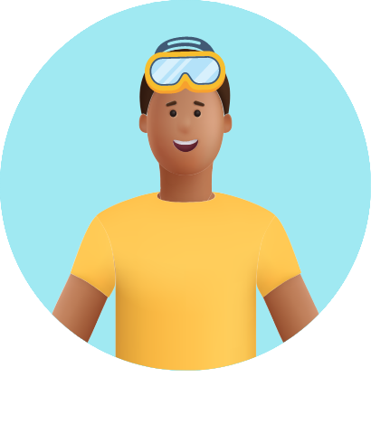

-
אני שחיינ/ית
שוחה הרבה? אנחנו ממליצים לך ללמוד להשתמש באירדוק, מכשיר שעוזר בניקוז נוזלים באוזניים. במשך השחייה, מים עלולים לחדור לאוזניים ולגרום לזיהום ולדלקת. האירדוק יכול להקל על בעיית הנוזלים שלך.
- 
-

-
Swimmer’s ear
היא תופעה נפוצה בעיקר אצל שחיינים ושחייניות. במשך השחייה חודרים לאוזניים נוזלים שעלולים להיות מזוהמים ודלקתיים, וזה יכול לגרום לדלקת. מומלץ להשתמש באירדוק מיד אחרי השחייה. המכשיר ינקז את הנוזלים ויגרום לתחושת הקלה.
תכירו את האירדוק
תוכלו לסובב את המכשיר וללחוץ על הנקודות השונות כדי להכיר את מבנה האירדוק